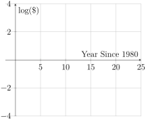

We saw in Section 1.4 that in the real world, it’s more common to have data that is approximately linear than it is to have data that is exactly. The same thing is true of exponential models! Today, we will put the skills we’ve been learning together to find a formula for an exponential model for a data set with an exponential trend.
Activity3.5.1.
The graph on the left below 1
Chart made in Excel using data from: Hannah Ritchie, Lucas Rodés-Guirao, Edouard Mathieu, Marcel Gerber, Esteban Ortiz-Ospina, Joe Hasell and Max Roser (2023) - "Population Growth" Published online at OurWorldInData.org. Retrieved from: https://ourworldindata.org/population-growth [Online Resource]
shows population of what is now the United States between 1700 and 2023.
The population appears to have grown exponentially, from a little under a million people in 1700 to about 343 million in 2023.
(a)Population
The log of the population is roughly linear. It seems to be about 5.95 in 1700, and about 8.54 in 2023.
(b)Log of US Population Between 1700 and 2023.
Figure3.5.1.US Population Between 1700 and 2023.
(a)
Explain why a linear model is not a good fit for the population data.
(b)
The trend of the data resembles the graphs of an increasing exponential model. Logs are often used to analyze trends when the data seems to grow exponentially. The graph above right shows the log of the population. The years are kept the same, but the vertical axis shows the log of the population instead of the population itself. A graph that takes the log of the data values on one of the two axes is called a semi-log graph.
Explain why a linear model IS a good fit for the log of the population data.
(c)
We can use either graph to estimate the US population in a year. For example, we see from the population data graph that the US population in 1990 was about 250 million. From the log population graph, we see that the log of the population in 1990 was about 8.4. If we let \(P\) be the population, we get the log equation
As we learned in Section 4.5, this tells us that \(P \approx 10^{8.4} = 251,188,643.151\text{,}\) which is about 250 million.
Estimate the US population in 1930 in two ways: (1) from the population data graph and (2) from the log of population data graph.
Activity3.5.2.
(a)
Here’s the log of population graph again.
The log of the population is roughly linear. It seems to be about 5.95 in 1700, and about 8.54 in 2023.
Figure3.5.2.Log of US Population Between 1700 and 2023.
Sketch a line on the graph to model the trend, and find a formula for your line.
(b)
If \(P\) is the population of the US, then the output of your line is \(\log(P)\text{.}\) To transform your linear model for \(\log(P)\) into an exponential model for \(P\text{,}\) apply the "raise 10 to the power of..." operation to both sides of your line formula.
(c)
Use your exponential model for \(P\) to estimate the US population in 1930 and 1990. How close are your answers to our earlier estimates?
(d)
Summarize the process that we used in this activity and Activity 3.5.1 to find an exponential model or a data set.
Activity3.5.3.
The graphs below show
The child mortality rate appears to have decreased exponentially, from nearly 8% in 1934 to about 0.6% in 2021.
(a)Child Mortality Rate
The log of the child mortality rate is approximately linear. It’s about 0.9 in 1934 and about -0.2 in 2021.
(b)Log of Child Mortality Rate
Figure3.5.3.US Child Mortality Rate Between 1933 and 2021.
(a)
Explain why a linear model is a better fit for the log of the child mortality rate than the child mortality rate.
(b)
Find a formula for a linear model for the log of the child mortality rate.
(c)
Find a formula for an exponential model for the child mortality rate.
(d)
Use your exponential model for the child mortality rate to estimate it in 1940, 1995, and 2025. What do you notice? What do you wonder?
Activity3.5.4.
The table below shows the cost in dollars per megabyte of storage space on computer hard drives from 1980 to 2004.
Table3.5.4.Cost Per Megabyte of Storage Space
Year
1980
1984
1988
1992
1996
2000
2004
Cost per MB ($)
192.31
87.86
15.98
4
0.173
0.006849
0.001149
(a)
Graph the data on the axes below left. Explain how the graph tells you that an exponential model is probably a better fit than a linear model.
Blank axes. The horizontal axis goes from 0 to 24, and the vertical axis goes from 0 to 200.
Figure3.5.5.Cost Per Megabyte of Storage Space

Blank axes. The horizontal axis goes from 0 to 24, and the vertical axis goes from -4 to 3.
Figure3.5.6.Log Cost Per Megabyte of Storage Space
(b)
Complete the table below by finding the log of the costs. Then, plot your new points on the axis above right.
Table3.5.7.Log Cost Per Megabyte of Storage Space
Year
1980
1984
1988
1992
1996
2000
2004
Log Cost per MB ($)
(c)
Explain why a linear model seems to be reasonable for the log of costs, then find a formula for a linear model for log costs.
(d)
Convert your linear model for log costs into an exponential model for costs.
(e)
Use your exponential model for costs to fill in the table below. What do you notice? What do you wonder?
Table3.5.8.Cost Per Megabyte of Storage Space
Year
1980
1984
1988
1992
1996
2000
2004
Cost per MB ($)
192.31
87.86
15.98
4
0.173
0.006849
0.001149
Estimate Cost From Model
Activity3.5.5.
Graph each of the data sets given below, and use your graph to decide whether a linear model, an exponential model, or neither is a reasonable fit for the trend. If a linear model or exponential model is a reasonable fit for the trend, find a formula for it.
(a)
The average price of electricity (in cents per kilowatt hour) from 1990 through 2008 is given below.
Table3.5.9.Average Electricity Price (cents per kilowatt hour)
Year
1990
1992
1994
1996
1998
2000
2002
2004
2006
2008
Cost
7.83
8.21
8.38
8.36
8.26
8.24
8.44
8.95
10.50
11.26
(b)
The average cost of a loaf of white bread from 1986 through 2008 is given below.
Table3.5.10.Average Cost of a Loaf of White Bread ($)